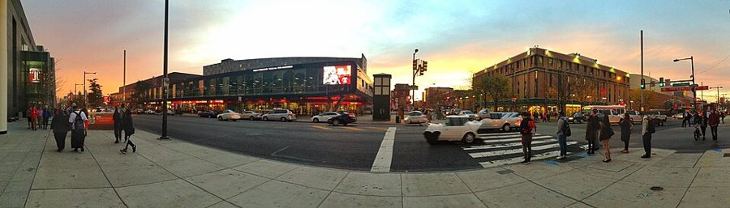
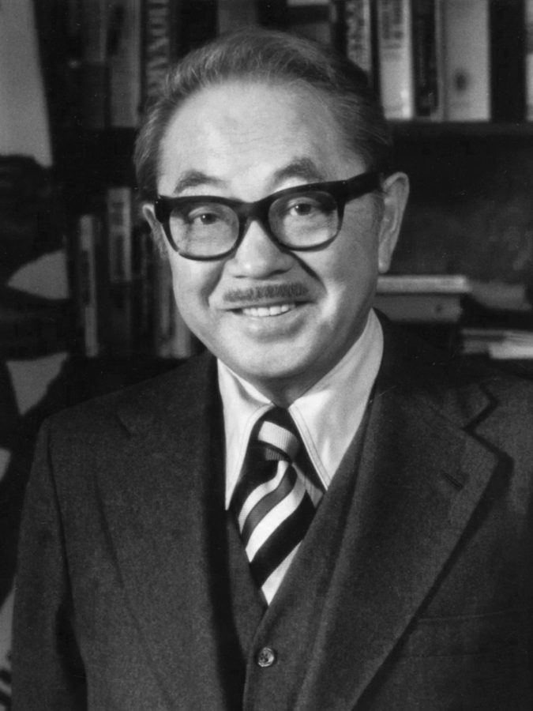
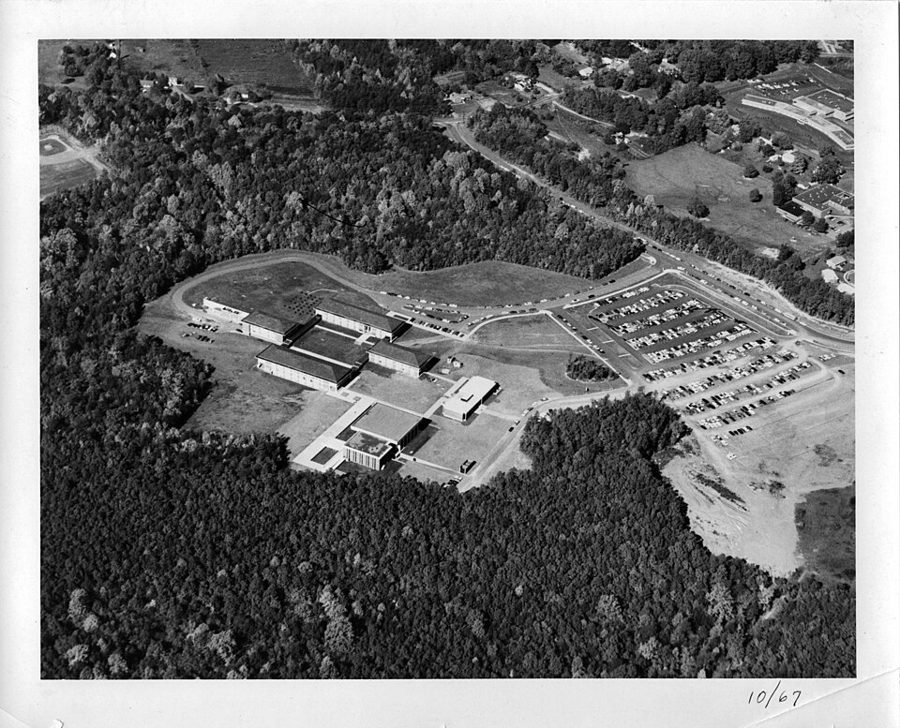

这一页在做什么
从他在 Temple 大学教书的头一年写到 1980 年去 George Mason。几件事：一份反对给黑人学生放水打分的备忘录上了报纸头版，他被请去黑人师生面前解释，像受审；在斯坦福 Hoover 研究所的一年，开始给国会写最低工资的研究；报告先被压着、后来出版，这帮他走向公众：写专栏、去国会作证；George Mason 来请他。读的时候抓两条线：他怎么看「对黑人降低标准」；他的最低工资结论，书里给了多少证据。

2015 年的 Temple 大学主校区南端，Broad 街和 Cecil B. Moore 大道的路口。这条大道原来叫 Columbia 大道，1964 年骚乱的地方（见第 1 章导读）。上一页说，学校离他长大的 Richard Allen 只隔十个街区。ImagineerJC，CC0，维基共享资源 读之前：这一页在他一生的哪里
上一页停在 1973 年 9 月：他搬到费城郊外的 Devon，进了 Temple 大学经济系。这一页从 Temple 的头一年写到 1980 年秋去弗吉尼亚。七十年代的美国通胀和失业一起上升；大学里开放招生、平权行动正在铺开，怎么对待基础差的学生，是校园里吵得最凶的事之一。这几年里，这个大学教授开始了他的公众生活：接受电台电视采访、写专栏、去国会作证。
读的时候带着这几个问题。不用先找答案，读完回来对照「检查一下理解」。
Rohrlich 是个好心人。作者为什么认为他的打分办法伤害了黑人学生？§4
备忘录里，对给黑人学生放水的两种教授，他一种「能理解」，一种「鄙视」。区别在哪？§4
他的最低工资研究，书里给了结论。给了证据吗？§6
他在 Temple 问过系主任有没有招黑人的压力，到 George Mason 又问了一遍。George Mason 的答案，为什么二十年后才知道？§7
斯坦福大学的拱廊和远处的 Hoover 塔，摄于 2012 年。塔 1941 年落成，是 Hoover 研究所的标志；§5 他在这里待了一年。King of Hearts，CC BY-SA 3.0，维基共享资源
分节地图
这一页是原书第 5 章的后四节。粗体是这一节的地标；斜体是英文这一节开头的几个词，在 Kindle 里搜它就能跳到那里，错字照电子书原样。读完打个勾。
Rohrlich 的午饭，一份备忘录上了头版约 2300 词 Shortly after I started teaching in … 从一次午饭、一门「黑人经济学」课说到备忘录上报；第 55–83 段是文件和报道。 Hoover 的一年，隔壁是 Teller约 600 词 At the end of the 1975 spring … 斯坦福一年：Hoover 的同事、隔壁的 Teller、学当父亲；第 95 段开始写国会报告。 被压着的国会报告，Tribune 的专栏约 1000 词 During the summer of 1976, we … 报告出版后，演讲、专栏、作证接踵而来；第 110 段起回到 Temple 的课堂。 George Mason 来请约 400 词 In late 1979, Professor William Snavely, … 他又问了那个老问题：有没有招黑人的压力。答案二十年后才知道。
出场的人
按出场顺序。书里的家人、同事和学生只写书里说的；公众人物写生卒年。
George Rohrlich Temple 的资深经济学教授 §4 第 42 段：请作者吃午饭，问怎么对付黑人学生的功课，说他们只要每天来上课、看着在记笔记就给 C。作者说他是逃离希特勒的奥地利犹太人，一位真心关心少数族裔的绅士和学者。
Lynn Holmes Temple 的同事和朋友 §4 第 49 段：两家常有来往。有一天笑着对作者说：就算你是白人，大家也不会喜欢你。
Devyn 作者的女儿 序言出过场。§4 第 86 段：1975 年夏天刚出生，跟父母去了斯坦福；第 99 段，作者几乎每天傍晚骑车带她兜风，再讲睡前故事。
Warren Whatley Temple 的博士生 §4 第 87 段：作者的博士微观理论课上三十来个学生，他的成绩不是第一就是第二，其余都是白人。作者劝他转去名气更大的学校，他去了斯坦福，同事们为此不高兴。
Laura Inglis George Mason 的学生 §4 第 91 段：作者说是他教过的最聪明的本科生，白人，在家上学，高中时修他的中级微观拿了第二。作者劝她去更难的学校，她没去；院长 Daniele Struppa 和作者一起当她的导师。
Aaron Director 1901–2004，经济学家，公众人物 「法律经济学」的开创者之一，1965 年从芝加哥大学退休后进 Hoover。§5 第 94 段：作者常和他吃午饭；你说什么，他都要找个例外让你想想。
Edward Teller 1908–2003，物理学家，公众人物 常被称作「氢弹之父」，1975 年起是 Hoover 的高级研究员。§5 第 96 段：办公室在作者隔壁，作者不时拿亚原子物理的问题去问他，他一边嘟囔一边回答。
Jay Parker 卒于 2015 年，公众人物 华盛顿的黑人保守派智库 Lincoln Institute 的创办人。§6 第 102 段：请作者去讲还没出版的国会报告，1977 年 5 月又为他办了一场招待会。
S. I. Hayakawa 1906–1992，加州的联邦参议员，公众人物 本行是语义学，当过旧金山州立学院校长，1977–1983 年任参议员。§6 第 102–103 段：听过作者的演讲，和 Hatch 一起逼委员会出版他的报告。
Orrin Hatch 1934–2022，犹他州的联邦参议员，公众人物 1977–2019 年任参议员。§6 第 102–103 段：和 Hayakawa 一起听了作者的演讲，又一起去委员会催那份报告。
William Snavely George Mason 经济系主任 §7 第 114 段：1979 年底请作者去面试，说没有招黑人的压力。二十年后，八十多岁的他在一次聚会上说，招 Karen Vaughn 和作者是为了多些女性和少数族裔教员。
Karen Vaughn George Mason 的经济学家 §7 第 115 段：比作者早几年进系。她对作者说没听说过招他的压力；就算有，招他也不会让谁满意，因为他不是「合适的那种黑人」。
背景：作者默认你知道的事
按在书里出现的顺序排，标题前是节号。这里只讲事情本身，作者怎么看放在后面几节。
§4 Temple 和「开放录取」Temple 大学 1884 年创办，主校区在北费城的 Broad 街，1965 年起是宾州的「州属」大学：拿州政府的拨款，但自己管理。open admissions 指高中毕业就能入学、基本不看成绩和考试的招生办法，最出名的是纽约市立大学 1970 年秋开始的开放招生，那年新生里黑人和波多黎各裔占 27%。六七十年代不少城市大学放宽了招生，随之而来的就是补习课怎么办、分数怎么打的争论。报道里说 Temple 当时「近乎」开放录取（第 78 段），作者的备忘录第 1 点就从这里说起。
§4 「黑人研究」的潮流
S. I. Hayakawa 1981 年当参议员时的官方肖像。1968 年旧金山州立学院罢课时，他是强硬的代理校长；§6 第 102–103 段，他和 Hatch 去委员会催出了作者的报告。United States Senate，公有领域，维基共享资源 六十年代末，黑人学生在许多大学要求开设黑人研究（Black Studies）课程、多聘黑人教授。最出名的是旧金山州立学院 1968 年 11 月开始的罢课，一直闹到 1969 年 3 月，结果学校设立了民族研究学院；当时强硬对付罢课的代理校长，就是 §6 出场的 Hayakawa。第 46 段学生要求开的「black economics」课，就是这股潮流的一部分。作者为什么反对，见下一节的论证。
§4 Watts 和 San Fernando ValleyWatts 是洛杉矶南部的黑人街区，1965 年 8 月在那里发生过一场持续六天的骚乱。San Fernando Valley 是洛杉矶北面的一大片郊区，当时住的多是白人。作者在第 85 段的括号里自己交代了：六十年代末，Watts 的学校学生多是黑人，the Valley 的多是白人。这一句报纸 1975 年登出来时，把粗口打成了横线（第 83 段），作者在第 85 段又照原话引了一遍。
§5 Hoover 研究所Hoover 研究所 1919 年由后来当了总统的 Herbert Hoover 在斯坦福创办，起初是收集一战文献的图书馆，后来成了研究机构。它名义上是斯坦福的一个单位，但有自己的董事会和经费，以聚集自由市场派学者出名。正式名称是 Hoover Institution on War, Revolution and Peace，作者写成 War, Peace and Revolution，次序不同。第 94 段列的同事里，Becker 1973 年起和 Hoover 有往来；Friedman 正式成为那里的高级研究员是 1977 年，比作者那一年晚，书里没说当时他以什么身份在那里。
§5 Teller 和「粒子泛滥」Edward Teller 生在匈牙利，参加过造原子弹的曼哈顿计划，是美国氢弹的主要推动者之一，1975 年从 Livermore 实验室退休后进了 Hoover。SLAC 是斯坦福直线加速器中心，一条三公里多长的电子加速器，1966 年开始运行。七十年代粒子物理接连发现新粒子，SLAC 的 Burton Richter 1976 年就因此得了诺贝尔物理学奖。Teller 说的 particle proliferation，多半是借「核扩散」（nuclear proliferation）的说法，挖苦新粒子多得泛滥。
§6 国会联合经济委员会和那份报告
Orrin Hatch，1977 年国会名录里的照片，那年他刚进参议院。§6 第 102–103 段：他和 Hayakawa 去委员会要说法，作者的报告才出版。图书馆的书目里，这份报告列出的四位赞助议员中就有他。US Government Printing Office，公有领域，维基共享资源
Joint Economic Committee 是 1946 年《就业法》设立的国会委员会，参众两院各出议员，不审法案，主要开听证、出研究报告，常请外面的学者来写。作者这份 Youth and Minority Unemployment 1977 年 7 月作为委员会的出版物印出，二十多页。报告的另一半讲 1931 年的联邦法律 Davis-Bacon 法 ：联邦出钱的建筑工程必须付当地的「通行工资」，它的来历在第 6 章讲。
§6 报纸专栏和报业辛迪加美国报纸的专栏作家常常不受雇于哪一家报纸，而是由报业辛迪加（syndicate）代理，一篇稿子同时卖给许多家报纸登，这叫 syndicated column。作者从 Philadelphia Tribune 起步：这家报纸 1884 年创办，常被称为美国连续出版时间最长的黑人报纸。1980 年 Richmond 一位评论版主编劝他走出去，此后他的专栏由 Heritage 基金会新办的 Heritage Features Syndicate 发行，1991 年转到 Creators Syndicate。第 108 段说，写书时有一百四十多家报纸登他的专栏。
§7 George Mason 和「老自治领」
1967 年 10 月航拍的 George Mason College，Fairfax 校区，四周还是树林。这时它还是弗吉尼亚大学的分校。Blue Ridge Aerial Surveys，CC BY-SA 4.0，维基共享资源 George Mason 在华盛顿西边的郊区 Fairfax，原是弗吉尼亚大学办在北弗吉尼亚的分支，1972 年才独立成为大学。作者 1980 年去时，它独立还不到十年，第 114 段说它当时名气不大。小标题里的 Old Dominion 是弗吉尼亚州的别称：相传查理二世感谢它在英国内战时忠于王室，这样称呼它，不过没有文献证据；另一种说法是，它是英王最早的海外领地。
先用中文过一遍：这一页的经济学
作者讲到经济学的地方，这里先从书外把道理讲一遍：它是什么、经济学一般怎么分析。它在这一页起什么作用，看每块最后一句。讲过的概念都汇总在经济学概念 。
§4 效用最大化 utility maximization 经济学的基本假设：一个人在几个选项里，挑对自己最划算的那个。「划算」不只是钱，也包括名声、安全、省事、良心过得去，统称「效用」（utility）。这个假设不是说人自私，而是说人会权衡：同一件事的代价变了，做选择的人就会跟着变。好比调度程序假设每个进程都想多占资源，不是说进程坏，而是这样假设才能预测系统怎么跑。五十年代末起，这一页在 Hoover 出场的 Gary Becker 把这套办法用到歧视、犯罪、家庭这些不算「经济」的事上。批评者说人常常不算账，行为经济学专门研究人在哪些地方系统地偏离这个假设。
在这一页： 落款 1974 年的备忘录最后一段（第 63 段的图）：他说教授也是效用最大化者，拿它给放水打分的两种动机排高下。
作者的论证，一步一步：假分数害了谁
作者说，学生只要每天来上课、看着在记笔记就给 C，就像狗开口说话就给 A：本来就没指望它会说，说什么都算好。§4 第 43–44 段
他认为，没有比给假分数、最后发假文凭更能误导黑人学生的了，这还让他们凭本事拿到的成绩也不被人信。§4 第 44 段
他说 Rohrlich 是真心关心少数族裔的好人；这件事恰恰说明，同情会蒙住一个聪明、善良、诚实的人的头脑。§4 第 45 段
黑人和白人的经济行为没有两套不同的基本假设，所以「黑人经济学」和「爱尔兰经济学」一样站不住；同事们不拒绝，他猜要么怕被说成种族主义者，要么是内疚。§4 第 46–47 段
他说自己爱物理，但黑人「担不起」让他去教；导读的理解是：在黑人还被怀疑「能力不行」的领域（第 110–111 段白人学生试探他够不够格），一个不称职的黑人教授会坐实这种怀疑。体育界已经「供得起」不称职的黑人，物理学还不行。§6 第 110–112 段
§5 最低工资 minimum wage 法律规定的工资下限，经济学叫「价格下限」（price floor）。教科书的竞争市场模型这样推：工资是劳动的价格，价格抬高，雇主就少雇人、多用机器、少给培训，或者改雇更熟练的人（需求曲线向下倾斜 ）；想干活的人反而多了。下限高过一个人的劳动在市场上值的钱，这个人就雇不上。最先被挤出去的，是经验最少、技能最低的人，比如十几岁的孩子。保住工作的人多拿了钱，丢了机会的人什么也没拿到。争论在「失」有多大：九十年代以来，不少研究发现温和的提高几乎不减少就业，一种解释是雇主在当地有压低工资的本事（买方垄断）；另一些研究仍然找到了明显的损失。
在这一页： §5 第 95 段、§6 第 104 段：他为国会写的研究，结论是最低工资造成青少年、尤其少数族裔青少年的高失业。书里只给了结论，上面的推理是导读补的。
雇用的人数 →
工资 ↑
需求
雇主想雇多少人
供给
愿意干的人
市场工资
最低工资
这一段：愿意干、却雇不上的人
雇上的少了
想干的多了
没有下限时
雇这么多
本站示意图：教科书竞争市场模型里的价格下限。书里没有这张图，也没讲这套推理。真实市场里两条线的斜率是多少、雇主有没有压价的本事，正是今天争论的地方，见「对照今天」。
§6 职业执照 occupational licensing 政府规定，干某一行先得拿执照：上够多少小时的课、考试、交费，有的还限总数，比如很多城市的出租车牌照。支持的理由是保护顾客，外行给人看病、接电线会出人命。经济学家常用的分析是：执照抬高了入行的门槛，等于限制供给，行里的人收入更高，顾客付更多钱，没钱上课的、读书少的、有前科的人最难进来，这是用法规挡住竞争者 的一种。门槛定在哪一行、定多高，常常和行里的人去游说有关。争议多在风险不大的行业：理发、编发、室内设计要不要执照。
在这一页： §6 第 109 段：1978 年夏他在 Heritage 研究执照，后来成了他第一本书 The State against Blacks 的重要部分。书里只提了书名，没讲内容。
他在这一页表明的三个立场：主流怎么看，他怎么看，本站怎么评。
给基础差的黑人学生放宽打分，是帮他们还是害他们
主流看法： 「分数要如实反映表现」很少有人公开反对；「降低期望本身就是歧视」这层意思，后来被小布什竞选时的一句话说得家喻户晓：soft bigotry of low expectations（低期望造成的软性偏见）。另一边认为，学生起点差得太远，只看分数等于惩罚出身差的人，适度照顾是补偿。
作者的看法： 放水打分、发假文凭最能误导黑人学生，也让他们凭本事拿的成绩不被信任（§4 第 44 段）；同情会蒙住好人的头脑（第 45 段）。
本站的评论： 他的说法有亲身经历撑着：同一篇论文一个打 A-、一个打 F，Rohrlich 亲口说「像在记笔记就给 C」。但这些是个案，书里没有数据说明放水有多普遍；报纸上他自己也说，结论来自同事的谈话、白人学生的抱怨和几件亲身经历。读的时候可以分开看：「分数要诚实」站得住；「放水很普遍」，书里只有几个例子。
最低工资会不会让穷人更难找到工作
主流看法： 教科书的竞争模型说会，尤其对青少年和低技能工人；七十年代的研究多数也找到了青少年就业的减少，只是幅度不确定。1994 年 Card 和 Krueger 的快餐店研究没找到减少，此后争了三十年：Neumark、Wascher 等人仍找到损失，Cengiz 等人 2019 年发现低薪岗位总数基本没变。今天的分歧主要在提多高才开始伤人。
作者的看法： 最低工资造成青少年、尤其少数族裔青少年的高失业（§6 第 104 段）。
本站的评论： 他的结论和当时多数经济学研究的方向一致；书里说七十年代批评最低工资的人少、争议大（第 95 段），委员会起初不肯出版，他认为多半就是因为这个（第 102 段）。弱处是书里只有结论，一个数字也没给，读者没法自己判断影响有多大。九十年代以后的研究把这个问题从「会不会」变成了「提多少才会」：提得少，损失可能很小；提得多，风险才大。拿这一页的话去评今天的提议，要先问提的是多少。
执照是不是挡住了黑人的路
主流看法： 多数经济学家同意执照抬高了入行门槛和价格，也让人难以跨州换工作；2015 年白宫的报告建议各州精简不必要的执照。但对黑人的影响不是单向的：Blair 和 Chung 的研究发现，在禁止有犯罪记录者持照的行业，执照帮黑人男性证明自己没有前科，反而缩小了黑白工资差距。
作者的看法： 书里只说他 1978 年开始研究执照（§6 第 109 段），演讲题目是「政府认可的、减少少数族裔经济机会的限制」（第 104 段），没有展开。
本站的评论： 这一页没有给出执照方面的任何论证，读者只知道他把执照和最低工资、Davis-Bacon 法归成一类。「执照挡住了没钱没门路的人」和今天的研究大体一致；「挡住的主要是黑人」要分行业、分年代看，今天的证据有正有反。
书里的剪报和文件
这些在你的 Kindle 上是图片，字小、搜不到。这里给大意，难词做成词条。剪报和文件只说大意，不逐句翻译。
§4 第 55–63 段 · 落款 1974 年 1 月 4 日，作者给商学院同事的备忘录 Fraudulent Grades在第 54 段（…didn't offer anything for quotation.）之后，八张图连着：信头、第一页正文，一行出处，再是第二页。
大意： 这是作者当年的说法。他说听说商学院有些课给少数族裔学生的分数高过他们的表现，然后分三点：问题很大一部分出在开放录取，考试能不能预测大学成绩要靠数据检验；公开的减课、补习比偷偷放水好；放水会让黑人学生学会糊弄、得不到真实的评价，助长白人的优越感和刻板印象，贬低凭本事拿分的人。最后他给放水的动机排序：怕报复的他能理解，出于内疚的他鄙视。
年份对不上：落款和正文第 50 段都说是 1974 年初；可报纸是 1975 年 1 月 25 日登的，说备忘录大约三周前才发出，还说他 38 岁、在 Temple 一年半。书里和落款写 1974 年，报纸的说法对不上，书里没有解释，本站不替它定年份。
open admissions
第 1 行
开放录取
见「背景」第一块。
predictive validity
第 7 行
预测效度
考试分数能多准地预测以后的表现，这里指 SAT 能不能预测大学成绩。他说这是要拿数据检验的事，不是立场问题。
remedial programs
第 12 行
补习课程
flunking out
第 5 行
因为挂科被学校开除
他说的一种做法：让学生办退学，掩盖其实是挂科被开除。
above board
第 7 行
光明正大的，摆在桌面上的
原指牌桌上手放在桌面以上、不做小动作。和下一行的 clandestine（偷偷摸摸的）对着说。
benevolent paternalism
第 4 行
好心的家长作风
像家长替孩子拿主意那样「照顾」人，好意里带着看低。
hustler attitudes
第 5 行
靠糊弄、钻空子过关的心态
hustler 在街头是骗子、混混，不是「勤快的人」。
plays into the hands of
第 12 行
正中……的下怀
不管本意如何，结果帮了对手的忙。
creditability
第 14 行
可信度
图上就是这样拼的，通常写 credibility。
utility maximizers
第 2 行
效用最大化者
见「经济学」一节的效用最大化。他说「能理解」怕报复的教授，不是说赞成这么做，是说这种动机合乎理性。
§4 第 64 段 · 1975 年 1 月 25 日 The Philadelphia Inquirer 头版报道（记者 Paul Jablow）紧接在备忘录的八张图之后。报道转到第 2 版的后半，书里排成了正文（第 67–83 段），能搜到。
大意： 这是别人的话：记者转述作者和院长。头版说，Temple 一位黑人教员指控部分白人同事给黑人学生放宽打分，是反向的种族歧视；作者说，得有人点破皇帝没穿衣服；院长 Wolfbein 佩服他有胆量，但认为放水只在低年级课里，不影响 Temple 商学院文凭的分量。配图是作者双手抱在脑后的照片。
Oldest Daily Newspaper in the United States
第 2 行
美国最老的日报（报头上的自称）
这家报纸其实 1829 年创办；1962 到 1975 年报头这样写，是把 1771 年创办的 Pennsylvania Packet 算作前身。
reverse racism
第 7 行
反向种族歧视
一般指对白人的歧视。这里的意思拐了个弯：白人教授「照顾」黑人学生，结果反倒害了黑人。
Education Writer
第 11 行
跑教育口的记者
tell the emperor he has no clothes on
第 14 行
点破人人看见却不敢说的事
出自安徒生童话《皇帝的新装》。
guts
第 16 行
胆量
口语，本义是内脏。正文第 54 段又引了一次。
词与短语
你用 Kindle，单个生词长按就能查，这里只收词典帮不上的：每个词都认识、合起来不懂的说法，口语和俚语，那个年代的说法，反话。斜体小字是原句里连续的几个词，错字照电子书原样，搜它就能跳到那里。点「记下」收进词本。
§4 Rohrlich 的午饭，一份备忘录上了头版
You not'posed to do dat
… stood on his hind legs and said …
你不该那么做（照方言拼）
原文在引号里，紧跟这几个词后面。就是 You're not supposed to do that。作者模仿刻板印象里的黑人土话来挖苦：在低期望之下，狗只要开了口，说什么都算好。这种拿口音开玩笑的写法，今天的读者多半会觉得刺耳；书里对这种写法没有另作交代。
compassion can cloud the mind
… much compassion can cloud the mind …
同情会蒙住人的头脑
cloud 作动词，「使模糊、遮蔽」。
To his credit
… To his credit, he thanked me …
说句公道话，值得称道的是
credit 在这里是「功劳、好处」，不是信用。
in that light
… thought of his actions in that light …
从这个角度
entertain the idea
… colleagues were seriously entertaining the idea …
认真考虑这个主意
entertain 不是「娱乐」，是「考虑、心里装着」。
postulates
… Are there black postulates and white …
（理论的）基本假设，公设
经济学从几条关于人怎么行为的假设推起，比如「人会权衡得失」。他问：难道黑人有一套，白人另有一套？
full and general amnesty and pardon
… full and general amnesty and pardon for …
全面大赦
反话。借法律文书的腔调，「赦免」白人同事为祖先背的罪，好让他们别再因为内疚干傻事。
purported
… a course on purported black economics …
所谓的
带怀疑：号称是，其实未必。
I had had it with
… when I had had it with one …
我受够了……
super-liberal
… with one super-liberal. He was …
极左派，极自由派
美国说的 liberal 指政治上偏左、主张政府多管的人，和中文里的「自由主义」不是一回事。
Graterford Prison
… at Philadelphia's Graterford Prison. I told …
Graterford 监狱
宾州的州立监狱，在费城西北约 50 公里，关重刑犯，2018 年关闭。
my brothers
… got finished with him, and had …
（监狱里的）黑人兄弟
原文 brothers 在引号里，就在这几个词前面。brother 是黑人之间的称呼。这段话暗指监狱里的性暴力，是粗话；作者自己说这话也许有点重、不够专业。
pocketbook
… makeup and carrying a pocketbook, he'd …
女式手提包
美国旧说法，不是笔记本，也不是钱包。
it brought a reward
… but it brought a reward: he …
好歹有了回报
反话：回报是那人从此几乎不跟他说话了。
casually volunteered
… One day, he casually volunteered that …
随口主动说起
volunteer 作动词，「没人问，自己说出来」，不是「当志愿者」。
housed
… which also housed its economics department …
（机构）下设，容纳
Temple 的经济系当时设在商学院里，所以备忘录发给商学院的教员。
the immediate prompt
… The immediate prompt for the memo …
直接起因
prompt 作名词，「促使某事发生的东西」。后面的 secondary prompt 是次要的起因。
in and of itself
… a failing grade in and of itself …
单凭这一点，本身就
soft disciplines
… disciplines who had little experience with …
「软」学科
原文 soft 在引号里，紧挨在这几个词前面。他指新闻、教育、传播这类学科，在他看来不讲分析和严格训练。
Philadelphia inquirer
… hands of a Philadelphia inquirer reporter …
（报纸）《费城问询报》
费城最大的日报。扫描把 Inquirer 的大写 I 认成了小写。
photo and all
… The interview, photo and all, landed …
连照片一起
and all 表示「连同……统统」。后面的 landed on the front page 是「登上了头版」。
offer anything for quotation
… they didn't offer anything for quotation …
（对记者）说可以署名登出的话
这几位同事私下夸他，但不肯让报纸引用。
views held by blacks
… reinforce stereotypical views held by blacks …
黑人持有的刻板看法
这是报纸的转述。备忘录原文是 held of blacks，「人们对黑人的看法」；报纸改了一个介词，意思就变了。下一段的 honor grades 原文也是 honest grades（如实的分数）。
resemble an inquisition
… turned out to resemble an inquisition …
像一场审判
inquisition 本指中世纪的宗教裁判所，引申为不讲理的审问。
First Amendment
… you think the Constitution's First Amendment guarantee …
（美国宪法）第一修正案
保障言论自由。他挖苦对方：难道言论自由不包括我？
prior approval
… sent you the memo for prior approval …
事先审批
原句在引号里。挖苦：写备忘录还得先给你们审？
piss-poor
… one more piss-poor teacher in Watts …
烂透了的
粗口。1975 年的报纸印成 p --- poor（第 83 段）。
did not bother me one bit
… did not bother me one bit …
一点也没让我烦心
one bit 加强否定，「一丁点也不」。
During my tenure at Temple
… During my tenure at Temple, I …
我在 Temple 任职期间
tenure 在这里只是「任期」，不是大学里的「终身教职」。
after-hours tutorials
… I conducted after-hours tutorials in calculus …
课后的辅导课
home-schooled
… She was a home-schooled high school …
在家上学的
不进学校，由父母在家教。
§5 Hoover 的一年，隔壁是 Teller
leave of absence
… I took a leave of absence …
（向单位）请长假，停职
职位保留，去别处待一段再回来。
Hoover Institution on War, Peace and Revolution
… the Hoover Institution on War, Peace …
Hoover 战争、革命与和平研究所
正式名称的次序是 War, Revolution and Peace。见「背景」。
ample computer time
… gave me ample computer time and …
充足的机时
七十年代用的是大型机，按时间分给用户，computer time 是一种要分配的资源。
Joint Economic Committee
… commissioned by the joint Economic Committee …
（国会）联合经济委员会
扫描把 Joint 认成了小写。见「背景」。
fringe benefits
… Among the fringe benefits at Hoover …
额外的好处
本义是工资以外的福利（保险、假期）。这里是玩笑：隔壁就是 Teller。
bug him with
… allowed me to bug him with …
拿……去烦他
bug 作动词，口语「打扰、纠缠」。
particle proliferation
… Teller sometimes (again grumpily) criticized it …
粒子泛滥
原文在引号里，紧跟这几个词后面。见「背景」。
gave Connie a break
… it also gave Connie a break …
让 Connie 歇口气
give someone a break 是「让人喘口气」，不是「打断」。
§6 被压着的国会报告，Tribune 的专栏
just getting off the ground
… that was just getting off the ground …
刚刚起步
像飞机刚离地。
remain on the shelf
… why it would remain on the shelf …
被束之高阁
haggling and editorial concessions
… After some haggling and editorial concessions …
讨价还价，在文字上做了让步
unexpurgated version
… publish an unexpurgated version …
未删节版
他肯让委员会删改，是因为 Hoover 答应另出一个不删的版本。
prevailing wages
… requiring high prevailing wages on federally …
通行工资
prevailing 是「当地普遍的」。Davis-Bacon 法规定的工资标准；批评者说它实际常按工会工资定，所以他说 high。见第 6 章导读。
under the auspices of
… took place under the auspices of …
由……主办、资助
intercollegiate Studies Institute
… of the intercollegiate Studies Institute …
（机构）校际研究所
资助大学里保守派讲座和学生刊物的组织。扫描把首字母认成了小写。
Philadelphia Tribune
… president of the Philadelphia Tribune, the …
（报纸）《费城论坛报》
费城的黑人报纸。见「背景」。
bringing aboard
… bringing aboard a conservative writer …
请进来，招进来
aboard 本指上船，引申为加入团队。
clipping the column
… readers were clipping the column and …
把专栏剪下来
clip 是剪报。那时没有转发，读者剪下来寄给外地的人。
editorial page editor
… then editorial page editor of the …
评论版主编
become syndicated
… he said, to become syndicated …
交给报业辛迪加，同时卖给多家报纸
见「背景」。
friendly takeover
… as part of its friendly takeover …
（双方同意的）友好收购
和被收购方不愿意的 hostile takeover（恶意收购）相对。
resident scholar
… a summer as a resident scholar …
驻所学者
在智库里有办公室、专心做研究的访问学者。
occupational licensure
… research project on occupational licensure …
职业执照制度
见「经济学」一节。
The State against Blacks
… my first book, The State against Blacks …
（书名）《与黑人作对的国家》
屏幕上没有斜体，看不出是书名。1982 年出版，这本书里只提了书名。
searching questions
… would ask searching questions that sometimes …
刨根问底的问题
searching 作形容词，「深究的、尖锐的」。
not born of paranoia, I trust
… not born of paranoia, I trust …
我相信这不是我多疑
born of 是「出于」；I trust 是「但愿如此、我相信」，带一点自嘲。
The brother could answer the question!
… The brother could answer the question …
这位黑人兄弟答得上来！
原句在引号里。作者想象黑人学生松了一口气的心声。
can't afford to have me
… black people can't afford to have me …
（黑人）担不起让我去（教物理）
不是看不起黑人。afford 是「承受得起代价」：一个不称职的黑人物理教授会坐实刻板印象。后面带引号的 afford incompetents 是同一个意思。
We see where you're coming from
… We see where you're coming from …
我们明白你的出发点
原句在引号里。where you're coming from 是「你的立场、用意」，不是「你从哪来」。
§7 George Mason 来请
of modest distinction
… institution of modest distinction in northern …
不算出众的，名气平平的
往轻里说，客气地说这所学校没什么名气。
the right kind of black
… kind of black, that is, politically …
「合适的那种」黑人
原文 right 在引号里，是反话。紧接着自己解释了：政治和经济上左倾的黑人。
on a one-year visiting basis
… on a one-year visiting basis so …
先以访问教授身份干一年
他自己要求的，好让双方互相看看。
读不通的扫描错字：
… (See pages loo-1o1.) The immediate … 应为 100–101，纸书的页码，Kindle 上对不上。下面第 53 段的 102-103 也是。… At the time, the late ig6os, schools … 应为 1960s。… in a class of 3o or so … 应为 30。… she'd scored 1575/i6oo on the SATs … 应为 1575/1600。… he agreed was zoo percent correct … 应为 100 percent。… finally appeared in mid-2977 … 应为 mid-1977。… complain mildly complaint that if … 多出一个词，意思是学生来温和地抱怨。… had a conservativelfree-market reputation … 应为 conservative/free-market。
和 Sowell 的书对照
Sowell 的自传 A Personal Odyssey 和书信集 A Man of Letters 本站都有导读。同一件事两边都写过的，摆在一起；说法不一样的并排列出，不判谁对。老站页面没有能直接跳到的锚点，链接到页，正文里写明在哪一节。
Temple 的分数风波前后，Walter 的一封短信
这本书 落款 1974 年的备忘录，1975 年 1 月 25 日上了 Inquirer 头版，随后他被请去黑人师生面前解释（§4 第 50–85 段）。
Letters 1975 年 3 月 3 日 Walter 给 Sowell 的信只有两句：帮自己人的仗常常很孤独，尤其是帮那些不觉得自己需要帮的人；又说听可靠的人讲，本地一家医院几乎明文规定不许让黑人医学生不及格。Sowell 说这封信像前线的战报。Letters 导读 02c，「信件地图」1975 年 3 月 3 日 →
不能对得太死： 信写在报道一个多月后，话题相同，但信里没提 Temple，也没提备忘录，只能说是同一时期的同一场仗。Temple 在 Sowell 的两本书里都没出现。
私下帮学生
这本书 在 Temple 课后给学生补微积分，劝最好的黑人博士生 Whatley 转去更好的学校（§4 第 87–90 段）。
Letters 上面那封信后面，Sowell 补了一段：Walter 不宣扬自己帮黑人或别人的事；他公开抨击福利国家，私下多年出时间、出钱帮不如他的人；他认为自己的钱怎么花是自己的事，政客却不能随便花纳税人的钱。Letters 导读 02c →
两边不一样： 方向一致，事情不重合。Sowell 说的是总的评价，这本书写的是教书范围里的辅导。
Hoover 研究所，一前一后
这本书 1975 年夏到 1976 年夏，他在 Hoover 当一年 National Fellow，开始写给国会的最低工资研究（§5 第 93–95 段）。
Odyssey 1975 年 Hoover 和行为科学高等研究中心都想请 Sowell 去当访问学者；1976 年年中他搬到北加州，计划先在研究中心待 9 个月，再去 Hoover 5 个月。Odyssey 导读 10a → 1980 年 9 月他以 Senior Fellow 的身份正式进 Hoover，说这是他做得最久、最满意的一份工作。Odyssey 导读 10b，第 26 节 →
Letters 1980 年 2 月 19 日 Hoover 给 Sowell 的聘书。Letters 导读 03a →
不是同一件事： 同一个机构，两人在那里的时间一前一后。两本书都没写两人在 Hoover 碰过面。
最低工资和黑人青少年失业
这本书 给国会联合经济委员会的研究，结论是最低工资造成青少年、尤其少数族裔青少年的高失业（§5 第 95 段，§6 第 102–104 段）。
Letters 1978 年 3 月 13 日 Sowell 回参议员 Proxmire 的信：四十年代末黑人青少年的失业率并不高，和白人差不多；五十年代起最低工资一再提高、覆盖面扩大，把没经验的黑人少年挤出了市场；许多独立学者的研究证明对黑人少年打击尤其重。Letters 导读 02d，「信件地图」1978 年 3 月 13 日 →
两边不一样： 同一时期、同一个论点，场合不同：Williams 是国会委托的研究，Sowell 是写给参议员的信。Sowell 的信里讲了推理和年代对比，这本书里只有结论。
一起去国会作证
这本书 在 Temple 那几年，他常去华盛顿，在参众两院就最低工资、Davis-Bacon 法、贫困和福利作证（§6 第 109 段）。
Odyssey Sowell 和 Walter 一起去作证，反对一项据说对黑人有利的热门法案。一位公开站在对方一边的黑人熟人坐到 Sowell 背后，小声告诉他对方的论证错在哪里；作证完，人就不见了。Walter 说：他不能让人看见和我们在一起。Odyssey 导读 10b，第 16 节 →
两边不一样： 这一场只在 Sowell 那边写了，法案的名字和年份也没写。这本书里没有和 Sowell 同去的作证，不要把它对到哪一次上。
参议员 Hayakawa
这本书 Hayakawa 和 Hatch 听过他的演讲；他告诉两人报告被压着，两人去委员会要说法，报告才出版（§6 第 102–103 段）。
Odyssey Hayakawa 组了一个经济顾问小组，Sowell 和 Laffer 都在里面；一次在日本餐馆吃饭，他提议两人去参加共和党初选，一个竞选参议员，一个竞选州长。Odyssey 导读 10b，第 22 节 →
不是同一件事： 同一个人，两件事，各在一边。
对照今天
书里能拿今天的数据和研究检验的几个说法。每张卡的标签判的是标题里那句「书里的说法」；「今天」一栏的数字都联网核过，写了核对日期和依据。
成立 后来的数据和研究支持这个说法部分成立 一部分对，一部分要打折扣被改写 后来的事实推翻了它，或者完全变了样有争议 研究者至今看法不一书里的说法：最低工资造成青少年、尤其少数族裔青少年的高失业
书里 作者说这是他给国会联合经济委员会的研究的结论（§6 第 104 段）。书里没有给数字。
当时（1977） 报告 1977 年 7 月以委员会出版物印出，二十多页。那时的研究多数站在他这边：Brown、Gilroy、Kohen 为美国国家经济研究局做的回顾说，以往的时间序列研究一致发现最低工资减少青少年就业，只是减少多少很不确定。
今天 联邦最低工资 2009 年起一直是每小时 7.25 美元，三十来个州定得更高。研究分成两边：Card 和 Krueger（1994）在新泽西快餐店没找到就业减少；Neumark 和 Wascher（2000）用工资单数据重做，得出减少；Cengiz、Dube、Lindner、Zipperer（2019）分析 1979–2016 年各州 138 次提高，低薪岗位总数基本没变。国会预算办公室 2019 年估计：联邦最低工资到 2025 年提到 15 美元，中位估计 130 万人失去工作，约 1700 万人涨工资。核对于 2026-10。依据：国会联合经济委员会网站上的报告和 HathiTrust 书目；NBER 工作论文 790；Card、Krueger，American Economic Review 1994；Neumark、Wascher，NBER 工作论文 5224；Cengiz 等，Quarterly Journal of Economics 2019；CBO 2019 年 7 月的报告（据多家报道）。
另一边 Card、Dube 等经济学家认为，温和的提高几乎不减少就业，还能提高低收入者的收入；他们的解释是雇主在当地有压低工资的本事。
书里的说法：执照和最低工资一样，是减少少数族裔经济机会的政府限制
书里 他的演讲题目叫「政府认可的、减少少数族裔经济机会的限制」（§6 第 104 段），1978 年开始研究执照（第 109 段）。书里没有展开。
当时（1950 年代） 白宫 2015 年的报告估计，五十年代美国需要州执照的就业者约占 5%。
今天 美国劳工统计局 2024 年的数据：就业者里 21.6% 持有执照；白宫 2015 年的报告说，算上各级政府要求的，超过四分之一的工作要执照。报告认为执照抬高了价格、让人难以跨州换工作，建议各州精简。说它挡住了没钱没门路的人，大体成立；说它主要挡住了黑人，证据有正有反。核对于 2026-10。依据：Occupational Licensing: A Framework for Policymakers（美国财政部、经济顾问委员会、劳工部，2015）；BLS 当前人口调查 2024 年年度表 49；Blair、Chung，Review of Economics and Statistics 2025。
另一边 经济学家 Peter Blair 和 Bobby Chung 发现，在禁止有犯罪记录者持照的行业，执照帮黑人男性证明自己没有前科，反而缩小了黑白男性的工资差距。
书里的说法：Davis-Bacon 法要求联邦出资或资助的建筑工程付高的「通行工资」
书里 作者在讲研究结论时顺带解释了这条法律（§6 第 104 段）；它的来历和种族动机，第 6 章才讲，见 Davis-Bacon 法 。
当时（1977） 这条 1931 年的法律一直有效，报告批评的就是它。
今天 仍然有效，适用于两千美元以上的联邦建筑合同。劳工部 2023 年修订了通行工资的算法（某个工资只要 30% 的工人拿到就可以定为通行工资，原来要过半），其中扩大适用范围的几条，2026 年被得州一家联邦法院撤销。国会里一再有人提出废除，都没有通过。核对于 2026-10。依据：劳工部 2023 年 8 月发布的最终规则（据 White & Case、Hinckley Allen 等律所的说明）；美国总承包商协会 2026 年 6 月的消息；国会网站上的 H.R. 4148（2025）。
书里的说法：1975 年他对记者预言，到 1980 年人们就会忘了平权行动
书里 Inquirer 报道转述他当年的话（§4 第 79 段）：现在的人比六十年代多了些常识。这是 1975 年的他，不是写书时的看法。平权行动是什么、作者的原则，见上一页的平权行动 。
当时（1978） 三年后最高法院判了 Bakke 案：大学不能用种族名额，但可以把种族当作录取的考量之一。平权行动不但没被忘，还有了法院的认可。
今天 又争了四十多年：1996 年加州公投禁止公立机构按种族优待，之后多个州跟进；2003 年最高法院在 Grutter 案里再次允许；2023 年 6 月 29 日，最高法院在 SFFA 诉哈佛、北卡大学案里判按种族考量的录取违宪，大学录取里的平权行动才基本结束。核对于 2026-10。依据：Students for Fair Admissions v. Harvard（600 U.S. 181，2023）的多家判决摘要；Regents of the University of California v. Bakke（1978）；Grutter v. Bollinger（2003）。
值得停下来的句子
just how much compassion can cloud the mind of an otherwise intelligent, kind, and honest person.— §4 第 45 段。本站译：同情能把一个原本聪明、善良、诚实的人的头脑蒙到什么地步。
他刚把 Rohrlich 的做法比作给会说话的狗打 A，下一段却先替他说好话：绅士、学者、逃过纳粹的人。这句话的分量在 otherwise（在别的方面都）：他不说对方坏，说的是好心办坏事。第 4 章他问自己的那个问题，在乎意图还是效果，这里落到了打分上。
I love subatomic physics and would love to teach it, but black people can't afford to have me do so.— §6 第 112 段。本站译：我爱亚原子物理，也很想教它，可是黑人担不起让我去教。
半是自嘲，半是认真。他承认自己不懂物理（第 96 段他说自己 not competent），所以去教就是一个不称职的黑人教授；在黑人还背着「能力不行」的成见的领域，这会坐实成见。afford 是关键词：他把它当作一笔账，后面拿体育作对比，说体育界已经「供得起」了。
检查一下理解
先在心里答，再点开。答错的那题，回书里把对应那一节再读一遍。
1.（§4）Rohrlich 给黑人学生 C 的条件是什么？作者拿什么比喻回他？ 每天来上课、看着像在记笔记。作者说这就像狗开口说话就给 A：狗本来就不该会说话，所以说什么都算好。期望低，本身就是看低人。
2.（§4）那位女学生拿另一门课的 A- 来证明 F 不公平。作者怎么看？ 两门课交同一篇论文本身就违规、该不及格，她却没想到这一点。他对她说，那位白人教授多半觉得「对黑人学生来说算不错」，因为本来没指望更好。
3.（§4）备忘录的年份和报纸的说法哪里对不上？ 落款是 1974 年 1 月 4 日，正文也说 1974 年初写的；报道是 1975 年 1 月 25 日登的，却说备忘录大约三周前才发出，还说他在 Temple 一年半。书里没有解释。
4.（§4）「换成 San Fernando Valley 我就给你 B」是什么意思？ 挖苦，不是真要交易。那个学生水平不够，却要去 Watts 教书；书里交代 Watts 的学校多是黑人学生，the Valley 的多是白人，言下之意是：一个差老师去 Watts，害的是黑人孩子。这句话后来最招人恨。
5.（§6）他的最低工资报告为什么差点没出版？最后怎么出的？ 国会联合经济委员会起初不肯出，他认为多半是因为报告批评最低工资和 Davis-Bacon 法。Hayakawa 和 Hatch 两位参议员去委员会要说法，他又接受了一些带政治考虑的删改，1977 年年中出版；Hoover 答应另出未删节版。
6.（§6）他说黑人「担不起」让他去教物理，是什么意思？ 物理这类领域，黑人还背着「能力不行」的刻板印象，一个不称职的黑人教授会坐实它。体育界有了 Robinson、Chamberlain 这样的人，才「供得起」不称职的黑人球员。
7.（§7）George Mason 招他时有没有压力？ 系主任 Snavely 当时说没有，他信了；二十年后 Snavely 在聚会上说，招 Karen Vaughn 和他是为了多些女性和少数族裔教员。Vaughn 则说她没听说过压力，就算有，他也不是让人满意的那种黑人。
用一句话说这一页，写给一个没读过的人。
读完想一想
想一想：Rohrlich 体谅黑人学生受过的教育和歧视，宽松打分；作者说这是害他们。如果你是老师，学生起点差很多，你会怎么打分？
几种看法 作者的看法：分数要诚实，帮助应该公开（补习、减课），偷偷放水既误导学生，也让凭本事拿分的人不被信任。Rohrlich 的做法代表另一种看法：考虑学生糟糕的学校教育和受歧视的经历，适度宽容。今天主张照顾的人多认为，只看分数等于惩罚出身差的学生；反对的人则引用「低期望造成的软性偏见」这句话。
想一想：美国联邦最低工资 2009 年以来一直是 7.25 美元，不少州已经提到 15 美元以上。你会支持把联邦最低工资提到 15 美元吗？担心的是谁，受益的又是谁？
几种看法 作者的看法：最低工资让技能最低的青少年、尤其黑人青少年找不到工作，失去早早工作、学本事的机会。Card、Dube 等经济学家认为，温和的提高几乎不减少就业，还能提高低收入者的收入。国会预算办公室 2019 年的估计在中间：提到 15 美元，涨工资的人多，丢工作的人也不少。
想一想：Cincinnati 那次以后，他到 Temple、George Mason 都先问系主任，有没有招黑人的压力，不肯当照顾名额。二十年后才知道 George Mason 当时其实有。换了你，会在乎这件事吗？
几种看法 作者的看法：按种族招聘贬低人，他宁可不要这份工作。Karen Vaughn 的看法：她没听说过这种压力；就算有，招他也不会让谁满意，因为他不是「合适的那种黑人」。支持平权的人则认为，招聘时考虑种族能打破圈子里只招熟人的惯性，被招的人照样可以凭本事立足。
精彩回顾
读过又忘了，从这里想起来。挑的是这一页最值得记住的人、场面和说法，不按原书顺序；每条后面是节号，想细看就回书里那一节。全书各页的这一节都收在全书回顾 。
一句话： 一份反对放水打分的备忘录让他上了头版，一份最低工资的报告让他走到公众面前。
会说话的狗 Rohrlich 说黑人学生只要来上课、像在记笔记就给 C。作者说这和狗开口就给 A 一样：期望低，本身就是看低人。
§4 同一篇论文，A- 和 F 女学生拿另一门课的 A- 来争她的 F；作者说两门课交同一篇论文，本身就该不及格。
§4 隔壁的 Teller 在 Hoover 的一年，办公室挨着「氢弹之父」Teller。他不时去问亚原子物理，Teller 一边嘟囔一边回答，还推荐书。
§5 被压着的报告 国会委员会不肯出他批评最低工资的报告；两位参议员去要说法，改了些措辞，1977 年年中才印出来。他的公众生活从这里开始。
§6 担不起一个差劲的黑人物理教授 体育界有了 Robinson 和 Chamberlain，黑人「供得起」差劲的球员；物理还不行，他盼着那一天。
§6 二十年后的实话 Snavely 当年说招他没有压力，二十年后在聚会上自己说出来：招他是为了多些少数族裔教员。
§7